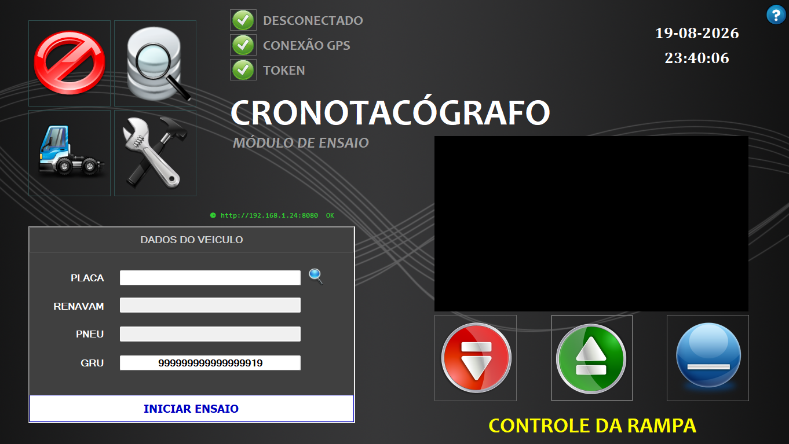
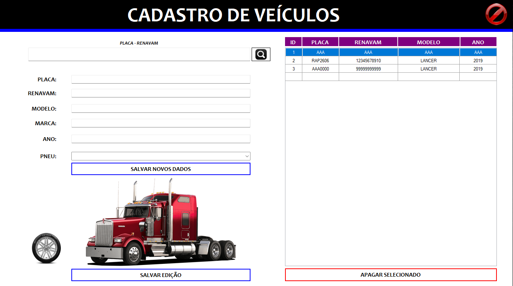
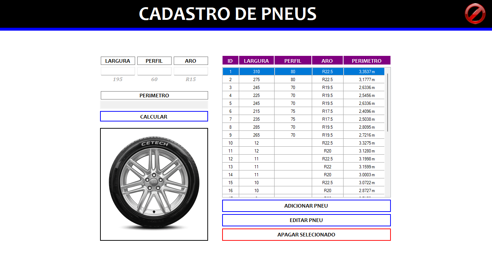
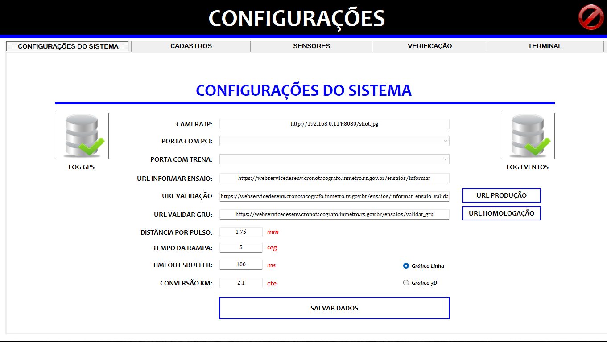
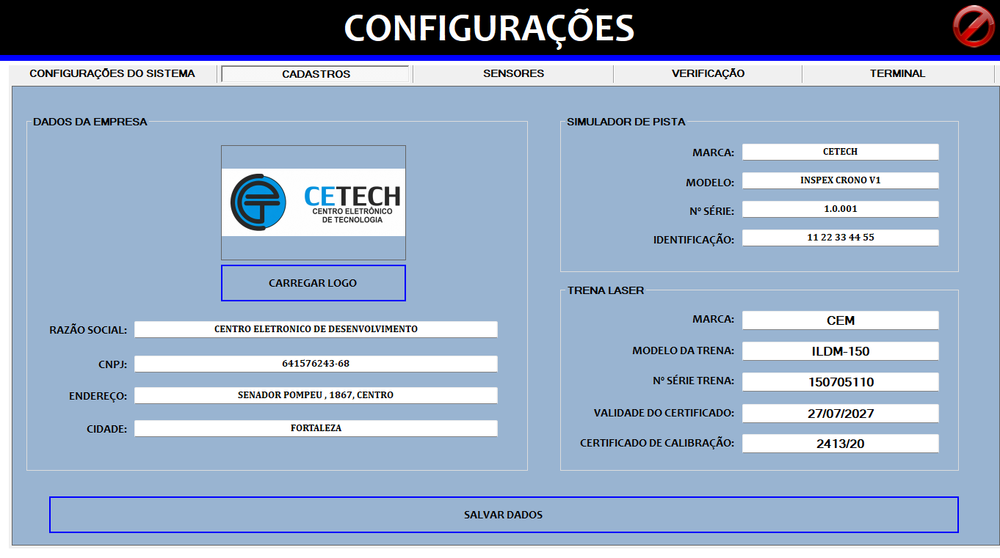
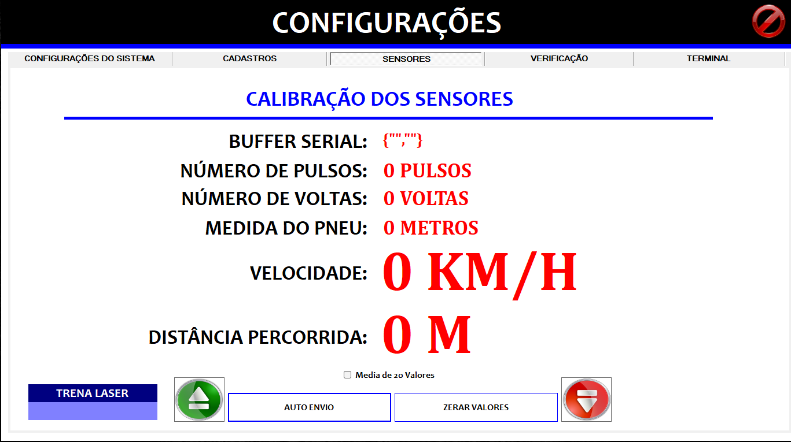
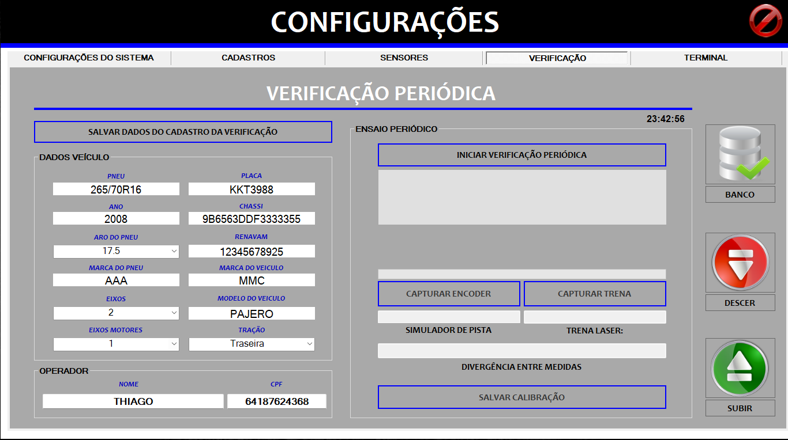
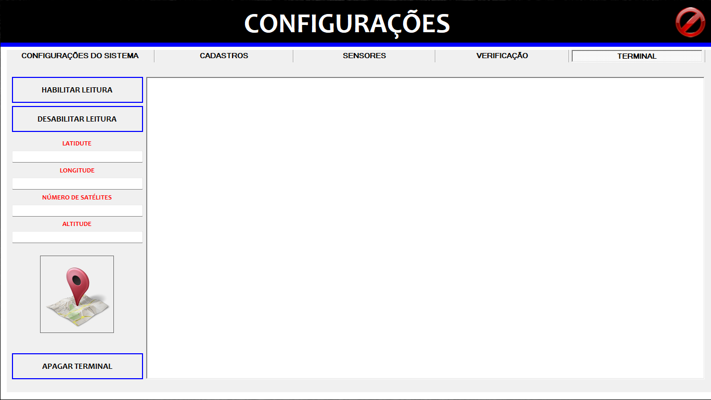

1. Apresentação do Sistema
1.1 Finalidade
O CronoTacografo (InspexCrono V2.0.07) é um software profissional para a verificação de conformidade de cronotacógrafos (tacógrafos) veiculares, desenvolvido pela CETECH e executado em conformidade com a norma NIE-DIMEL-140 do Inmetro. É utilizado por Postos Autorizados de Cronotacógrafo (PAC) e institutos de metrologia (IPEM/INMETRO).
O sistema controla um simulador de pista com rolos motorizados e um encoder que mede a rotação dos rolos. O veículo é submetido a um ciclo padrão de ensaio de aproximadamente 2.000 m a 50 km/h (±5 km/h), medindo velocidade, distância, desvio padrão e a medida do pneu. Ao final, o sistema:
- Captura a foto da placa via câmera IP;
- Gera o gráfico velocidade × tempo;
- Grava o resultado no banco de dados (SQL LocalDB);
- Gera, assina digitalmente (token USB/certificado) e envia o XML ao webservice do Inmetro (informar, informar_ensaio_validacao, validar_gru);
- Exibe a resposta do servidor (sucesso ou erro com código).
O sistema também realiza a verificação periódica / calibração, comparando a distância medida pela trena laser com a medida do rolo/encoder.
1.2 Especificações de hardware
O sistema opera com os seguintes equipamentos:
| Equipamento | Função | Detalhe |
|---|---|---|
| PCI de pulsos | Aquisição dos pulsos do encoder e dados GPS | Porta serial (115200 baud) |
| Simulador de pista (rolos) | Posicionamento e condução do veículo | Elevador/rampa hidráulico + rolos motorizados |
| Encoder | Mede a rotação dos rolos | Proporcional aos pulsos |
| Trena a laser | Referência de distância para calibração | Porta serial separada (configurável) |
| GPS | Data/hora e localização geográfica | Coordenadas gravadas no XML |
| Câmera IP | Foto da placa do veículo | URL configurável na tela de Configurações |
| Certificado digital A3 | Assinatura do XML | Token USB (CPF/CNPJ) |
1.3 Requisitos de sistema
| Componente | Especificação |
|---|---|
| Sistema Operacional | Windows 10 / 11 (64 bits) |
| Framework | .NET Framework 4.8 ou superior |
| Banco de dados | SQL Server LocalDB (arquivo dbCrono.mdf) |
| Resolução de vídeo | Mínimo 1280 × 720 |
| Portas seriais | 2 portas COM disponíveis (PCI e trena) |
| Conexão Internet | Necessária para validação da GRU e envio do XML ao Inmetro |
| Certificado digital | A3 (token USB), com driver e PIN |
1.4 Público-alvo
- Operadores de PAC (Postos Autorizados de Cronotacógrafo);
- Técnicos de institutos de metrologia (IPEM/INMETRO);
- Oficinas especializadas em tacógrafos.
2. Instalação e primeira execução
2.1 Pré-requisitos
- SQL Server LocalDB 2016 ou superior — anexado automaticamente ao abrir o sistema;
- .NET Framework 4.8;
- Token USB do certificado digital A3 — inserido e com driver instalado
(driver do fabricante na pasta
Suporte\drive token win11 64bits.zip); - Portas seriais identificadas no Gerenciador de Dispositivos (PCI e trena).
2.2 Instalação do sistema
- Copia-se a pasta do sistema para o local desejado (ex.:
C:\CronoTacografo); - Execute CronoTacografo.exe como Administrador;
- Na primeira execução, o sistema cria automaticamente as pastas
C:\InspexCrono\imgPlaca,\imgGrafico,\xmle\xmlAssinado; - O banco de dados
dbCrono.mdfé anexado ao LocalDB; - Configure as portas COM e demais parâmetros na tela de Configurações (capítulo 5).
2.3 Estrutura de pastas
C:\InspexCrono\ ├── imgPlaca\ # Fotos do veículo capturadas pela câmera IP ├── imgGrafico\ # Imagens do gráfico velocidade × tempo ├── xml\ # XMLs do ensaio (não assinados) └── xmlAssinado\ # XMLs do ensaio assinados digitalmente CronoTacografo\ ├── config\ # settings.rcc, empresa.rcc, dadosCalibracao.rcc ├── schemas\ # XSD de validação do Inmetro (informar.xsd, validar_gru.xsd, ...) ├── Suporte\ # Drivers, logos, retorno.xsd, thumbPrint.txt, pdf de apoio └── dbCrono.mdf # Banco de dados LocalDB
2.4 Primeira execução
Ao iniciar, o sistema:
- Carrega os arquivos de configuração (
config\settings.rcc); - Conecta a porta serial principal (PCI);
- Verifica o token/certificado e o GPS;
- Inicia a câmera IP e o servidor web interno (porta 8080).
Os três indicadores superiores (Serial, GPS, Token) devem estar com a cor verde para liberar o ensaio.
3. Tela principal
3.1 Visão geral

A tela principal é o centro de controle do sistema. A partir dela o operador informa os dados do veículo, inicia o ensaio, aciona a rampa, acompanha o vídeo da câmera IP e acessa cadastros, configurações e relatórios.
3.2 Indicadores de status (flags)
Verifique três indicadores no topo antes de iniciar qualquer ensaio:

| Indicador | Função | Estados |
|---|---|---|
| SERIAL | Conexão com a PCI (pulsos + GPS) | CONECTADO (verde) / DESCONECTADO (cinza) |
| GPS | Recepção de satélites | ATIVO (verde) / INATIVO (cinza) |
| TOKEN | Presença do certificado digital | OK (verde) / AUSENTE (cinza) |
| Lat / Lon | Coordenadas GPS correntes | Latitude / Longitude |
| Data / Hora | Sincronizados com GPS | dd-MM-yyyy / HH:mm:ss |
| Web (8080) | Servidor interno | http://IP:8080 OK |
Legenda de cores
| Elemento | Verde / OK | Cinza / Off |
|---|---|---|
| Flags (Serial, GPS, Token) | funciona / ativo | desconectado / inativo |
| Gráfico azul | velocidade dentro da faixa (45–55 km/h) | — |
| Gráfico vermelho | — | velocidade fora da faixa (risco de aborto) |
| XML branco | — | dados salvos no PC mas NÃO enviados (sem internet) |
| XML vermelho | — | erro no XML (dados inválidos ou mal-formado) |
3.3 Dados do veículo
| Campo | Descrição | Obrigatório |
|---|---|---|
| PLACA | Placa do veículo (ex.: ABC1D23 ou padrão Mercosul); com botão de busca 🔍 | Sim (mín. 7 caracteres) |
| RENAVAM | Número do RENAVAM (11 dígitos) | Sim |
| PNEU | Medida do pneu (ex.: 235/75 R17,5), carregada do cadastro | Sim |
| GRU | Guia de Recolhimento da União — 18 caracteres | Sim (18 dígitos) |
O botão de busca (lupa) localiza o veículo no cadastro a partir da placa e preenche Renavam, Pneu automaticamente.
3.4 Controles da rampa
Três botões controlam o elevador/rampa do simulador de pista:
| Botão | Descrição |
|---|---|
| DESCER (▼) — vermelho | Aciona o motor para descer a rampa |
| SUBIR (▲) — verde | Aciona o motor para subir a rampa |
| PARAR (—) — azul | Para o motor imediatamente |
3.5 Câmera IP e vídeo
O feed da câmera IP é exibido ao vivo na tela principal. Clique sobre o vídeo para alternar entre:
- Modo janela: tamanho reduzido dentro do painel;
- Modo tela cheia (Dock Fill): imagem ocupa todo o espaço.
3.6 Botões de navegação
| Botão | Ação |
|---|---|
| INICIAR ENSAIO | Abre a tela de execução do ensaio (após validar GRU, token e GPS) |
| CADASTRO | Abre o cadastro de veículos |
| CONFIGURAÇÕES | Abre a tela de configuração |
| RELATÓRIOS (BANCO) | Abre o histórico de relatórios |
| SAIR | Fecha o sistema (encerra web, câmera e serial) |
| SOBRE | Exibe informações da versão |


4. Cadastro de veículos e pneus
4.1 Cadastro de veículos
O cadastro de veículos é aberto pelo botão Cadastro na tela principal.

Incluir
- Preencha PLACA (mínimo 7 caracteres), RENAVAM, MODELO, MARCA, ANO;
- Selecione o PNEU no combo (carregado do cadastro de pneus);
- Clique em SALVAR NOVOS DADOS — o sistema grava na tabela
tbTruck, atualiza a grade e limpa os campos.
4.2 Consultar / editar / excluir
- Consultar: digite placa ou Renavam no campo de busca e clique na lupa 🔍 (a grade exibe todos ao abrir);
- Editar: clique na linha na grade para carregar os dados, altere e clique em SALVAR EDIÇÃO;
- Excluir: selecione a linha e clique em APAGAR SELECIONADO; confirme na caixa de diálogo.
4.3 Cadastro de pneus
Dentro do cadastro de veículos, o botão de pneu abre a tela de cadastro de pneus,
protegida por senha (senha padrão: cronocetech).

- Informe LARGURA, PERFIL e ARO (ex.: 195 / 60 / R15);
- Clique em CALCULAR — o PERÍMETRO é calculado automaticamente;
- Use ADICIONAR PNEU, EDITAR PNEU ou APAGAR SELECIONADO.
5. Configurações
Acesse pela tela principal: botão Configurações (abas: Sistema, Cadastros, Sensores, Verificação, Terminal). Campos bloqueados exigem senha.
5.1 Configurações do sistema

| Campo | Descrição | Permissão |
|---|---|---|
| Câmera IP (URL) | URL da câmera IP (ex.: http://192.168.0.114:8080/shot.jpg) | Operador |
| PORTA COM PCI | Porta serial da PCI (ex.: COM11) | Operador |
| PORTA COM TRENA | Porta serial da trena laser (ex.: COM1) | Operador |
| DISTÂNCIA POR PULSO | Tamanho de cada pulso do encoder em mm (ex.: 1,75) | Admin |
| CONVERSÃO KM | Fator de conversão para km/h (cte) — ex.: 2,1 | Admin |
| URL INFORMAR ENSAIO | Webservice de envio de ensaio do Inmetro | Admin |
| URL VALIDAÇÃO | Webservice de validação do Inmetro | Admin |
| URL VALIDAR GRU | Webservice de validação da GRU | Admin |
| TEMPO DA RAMPA | Timeout de segurança da rampa em segundos (ex.: 5) | Operador |
| TIMEOUT SBUFFER | Timeout do buffer serial em ms (ex.: 100) | Admin |
| TIPO GRÁFICO | 2D (linha) ou 3D (área) | Operador |
Alterne entre URL PRODUÇÃO e URL HOMOLOGAÇÃO conforme o ambiente e clique em SALVAR DADOS. Botões auxiliares abrem os logs de eventos e de GPS.
5.2 Cadastros (empresa, pista e trena)

- DADOS DA EMPRESA — razão social, CNPJ, endereço, cidade e logo (botão CARREGAR LOGO); aparecem nos relatórios;
- SIMULADOR DE PISTA — marca, modelo, nº de série, identificação;
- TRENA LASER — marca, modelo, nº de série, validade e certificado.
5.3 Sensores

Monitoramento em tempo real:
| Campo | Descrição |
|---|---|
| BUFFER SERIAL | Pacotes JSON recebidos da PCI |
| NÚMERO DE PULSOS / VOLTAS | Contagem do encoder |
| MEDIDA DO PNEU | Distância medida (metros) |
| VELOCIDADE | km/h calculada |
| DISTÂNCIA PERCORRIDA | metros acumulados |
Botões: TRENA LASER (leitura da trena), AUTO ENVIO, ZERAR VALORES e Média de 20 Valores.
5.4 Verificação (calibração)

Fluxo de calibração:
- Preencha DADOS VEÍCULO (pneu, placa, ano, chassi, aro, Renavam, marcas/modelos, eixos, eixos motores, tração) e OPERADOR (nome e CPF);
- Posicione o veículo sobre os rolos;
- Clique em CAPTURAR ENCODER (medida do rolo) e CAPTURAR TRENA (trena laser);
- Conferir o indicador DIVERGÊNCIA ENTRE MEDIDAS;
- Clique em SALVAR CALIBRAÇÃO — grava em
tbCalibracaoe envia o XML de validação.
5.5 Terminal (GPS/NMEA)

Exibe o fluxo de sentenças NMEA e os campos LATITUDE, LONGITUDE, ALTITUDE e NÚMERO DE SATÉLITES. Botões: HABILITAR LEITURA, DESABILITAR LEITURA e APAGAR TERMINAL.
6. Ensaio completo
6.1 Pré-requisitos
Antes de clicar INICIAR ENSAIO na tela principal, certifique-se de:
- Veículo posicionado sobre os rolos e a câmera IP já ajustada para que a placa e os rolos com os pneus estejam visíveis no frame;
- PLACA, RENAVAM, PNEU e GRU preenchidos (GRU com 18 dígitos);
- GPS ativo (coordenadas visíveis — sincroniza o relógio);
- SERIAL conectado (verde);
- TOKEN inserido e reconhecido (verde);
- Câmera IP capturando a imagem da placa;
- Conexão Internet ativa (validação GRU + envio do XML).
No clique, o sistema valida a GRU no Inmetro (POST validar_gru) e,
aborta se o retorno não for status=OK / codigo=200.
6.2 Estágio 1 — Posicionamento, rampa, alinhamento e medida do pneu


- Posicionar sobre os rolos: posicione o veículo e clique CONTINUAR;
o sistema envia
#RollDown(desce a rampa) e, ao zerar o tempo da rampa, envia#Motor_off; - Alinhamento: acelere acima de 20 km/h (painel verde 20), depois acima de 30 km/h (painel verde 30). A barra decrementa até avançar;
- Medida do pneu: acelere acima de 45 km/h (faixa 45–55) e mantenha até a
barra encher — o sistema coleta 20 amostras e calcula a média (medida final do pneu em mm).
Na medida do pneu, a faixa é estrita: se ultrapassar 55 km/h, a amostra é descartada e a coleta reinicia.
- Ao aparecer -- PARE --, pare o veículo para iniciar a parada.
6.3 Estágio 2 — Parada inicial (2 minutos)

- O sistema registra o tempo inicial do ensaio;
- Inicia o gráfico velocidade × tempo (plotagem a cada 500 ms);
- Contagem regressiva de 2:00 minutos com o veículo parado;
- Ao terminar, avança automaticamente para o Estágio 3.
6.4 Estágio 3 — Ensaio dinâmico (45–55 km/h por 2.000 m)

- Mantenha a velocidade entre 45 e 55 km/h por 2.000 metros;
- A foto da placa é capturada aleatoriamente neste estágio — mantenha o foco na condução e não tente reposicionar o veículo para a câmera;
- Depois de percorridos os primeiros 50 m dentro da faixa, o sistema ativa a proteção de aborto: sair de 45–55 km/h por apenas 1 segundo interrompe o ensaio imediatamente;
- Velocidade (km/h), Distância (m) e Tempo (MM:SS) são exibidos em tempo real;
- O gráfico plota a linha azul dentro da faixa e vermelha fora; as linhas de referência em 45 e 55 km/h;
- Critério de término: a distância > 2000 m encerra o estágio e calcula velocidade média, máxima e desvio padrão.
6.5 Estágio 4 — Parada final (2 minutos)
Contagem regressiva de 2 minutos com o veículo parado. Ao zerar, o sistema avança para a aba RESULTADO e desabilita as linhas de referência do gráfico.
6.6 Estágio 5 — Resultados, XML e envio ao Inmetro

O sistema exibe:
| Campo | Descrição |
|---|---|
| Pneu | Medida do pneu (mm) |
| Velocidade máxima | km/h (durante o ensaio) |
| Velocidade média | km/h (durante o ensaio) |
| Desvio padrão | % |
| Distância percorrida | metros |
Ao final, o sistema salva o gráfico e a foto da placa, grava em tbRelatorio,
gera o XML do ensaio, assina digitalmente com o token e
envia ao Inmetro. A tela Resposta do Servidor mostra o resultado:
| Cor / status | Significado | Ação do operador |
|---|---|---|
AZUL / OK / codigo=200 | XML recebido e aceito pelo Inmetro — "XML ENVIADO" | Nenhuma. Próximo veículo. |
| BRANCO / ASSINADO | Dados seguros no PC, mas falha de rede/envio | Não refaça o ensaio! Reenvie pelo Banco de relatórios quando a internet voltar. |
| VERMELHO / ERRO (500, 600…3600) | Rejeição do Inmetro (dados inválidos ou XML mal-formado) | Refaça o ensaio. Consulte a mensagem de erro específica. |

7. Relatórios
7.1 Banco de relatórios de ensaio
Acesse pela tela principal → botão Relatórios (BANCO). Lista os ensaios em
tbRelatorio com status de envio na coluna ENVIO.
- Busca: placa, Renavam, GRU ou data (ano atual por padrão);
- Xml com erro: filtra "ERRO NO XML";
- Xml falta enviar: filtra "XML ASSINADO" (ainda não enviado);
- Reenviar XML: reenvia ao Inmetro (útil após falha de rede);
- Calendário 📅: abre o filtro por período.

7.2 Relatório individual
Selecione uma linha e clique no botão de relatório. O RELATÓRIO DE ENSAIO mostra: logotipo, dados da empresa, dados do veículo, data/hora, GRU, VELOCIDADE MÁXIMA, VELOCIDADE MÉDIA, DESVIO PADRÃO, DISTÂNCIA PERCORRIDA, medidas totais, o gráfico TEMPO × VELOCIDADE e a foto da placa com data/hora de captura.
7.3 Lista por período
No banco, clique no botão de calendário → informe DATA INÍCIO e DATA FIM → FILTRAR. Gera o RELATÓRIO DE ENSAIOS (Id, Data, Hora, Placa, Marca, Modelo, Renavam, GRU, ENVIO) para o período.
7.4 Relatório de calibração
Acesse por Configurações → BANCO DE CALIBRAÇÃO. O RELATÓRIO DE CALIBRAÇÃO mostra: empresa, veículo (placa, chassi, pneu, eixos, tração), operador (nome/CPF), medida da trena laser, medida do simulador, DIVERGÊNCIA (%), dados da trena e da pista, e a foto da placa. Observação: calibração a cada 6 meses ou 2.000 ensaios.
7.5 Imprimir e exportar
No visualizador de relatório (ReportViewer) use os botões de imprimir e exportar para salvar em PDF, Excel ou Word.
8. Verificação periódica / calibração
A verificação periódica mede a distância por dois métodos e compara:
| Método | Equipamento | Porta |
|---|---|---|
| Rolo / encoder | Simulador de pista | PCI (115200 baud) |
| Trena laser | Trena a laser | Porta COM separada (configurável) |
Procedimento (sequência rígida):
- Preencha DADOS VEÍCULO e OPERADOR na aba Verificação;
- Clique em INICIAR VERIFICAÇÃO PERIÓDICA;
- Clique em CAPTURAR ENCODER e acelere acima de 45 km/h até a barra completar (o sistema coleta 20 amostras válidas);
- Pare o veículo. O botão CAPTURAR TRENA só é habilitado após a coleta do encoder — não tente clicá-lo antes;
- Faça a medição com a trena laser e envie os dados (bluetooth/serial);
- Conferir a DIVERGÊNCIA (%); se conforme, clique em
SALVAR CALIBRAÇÃO (grava em
tbCalibracaoe envia o XML de validação).
9. Logs e auditoria
- Log de eventos — auditoria de todas as ações (entradas em telas, início/fim de ensaios, gravações, envios). Consulta pela aba Configurações do Sistema (botão LOG EVENTOS);
- Log de GPS — registro de latitude, longitude, altitude e satélites ao longo do tempo. Consulta pelo botão LOG GPS.
10. Solução de problemas
| Problema | Causa provável | Solução |
|---|---|---|
| "SERIAL DESCONECTADO" | Porta COM incorreta ou equipamento desligado | Conferir PORTA COM PCI em Configurações; iniciar equipamento (PCI). |
| Sem pulsos recebidos | PCI desligada ou sem energia | Verificar alimentação e conexão da PCI. |
| Dados corrompidos | Baud rate incorreto | Confirmar 115200 baud (padrão). |
| Timeout de buffer | Mensagens seriais parciais | Ajustar TIMEOUT SBUFFER em Configurações (padrão 100 ms). |
| Tela preta na câmera | URL da câmera incorreta ou offline | Verificar CAMERA IP em Configurações e conexão de rede. |
| Sem coordenadas GPS | GPS sem sinal (ambiente fechado) | Aguardar fixação no céu aberto; clicar no indicador GPS para forçar nova leitura. |
| "Certificado não encontrado" | Token não inserido ou driver ausente | Inserir token e instalar driver da pasta Suporte. |
| Erro de assinatura | Certificado expirado ou inválido | Verificar validade; usar certificado ICP-Brasil. |
| "Sem resposta do servidor" | Falha de rede ou URL incorreta | Verificar internet e se está no ambiente (produção/homologação) correto. |
| Erro 3100 | GRU de homologação fora do ambiente | Usar GRU de homologação específica do ambiente configurado. |
| Rampa não desce / Motor não para | Timeout ou falha de comunicação serial | Conferir TEMPO DA RAMPA; clicar em PARAR; reiniciar a porta (reset USB). |
| "Erro no Banco de Dados" | LocalDB não instalado ou parado | Instalar/ativar SQL Server LocalDB; executar como Administrador. |
| Foto borrada / sem rolos visíveis | Câmera desposicionada ou enquadramento errado | Ajustar enquadramento (placa + rolos + pneus) na tela principal antes do próximo ensaio. |
| "GRU NÃO VALIDADA" | GRU incorreta, expirada ou ambiente errado | Verificar 18 dígitos e alternar URL Produção/Homologação em Configurações. |
| Serial desconectou DURANTE o ensaio | Falha física na PCI ou cabo solto | Reiniciar o software; o ensaio interrompido deve ser refeito. |
| Token ausente ao gerar o relatório | Token removido ou PIN bloqueado | Reinserir o token; o XML não é gerado sem assinatura. |
Reenvio de XML com falha
Se o XML ficou com status "XML ASSINADO" (não enviado), use o Banco de relatórios → selecione o ensaio → Reenviar XML. O XML assinado é reutilizado sem precisar refazer o ensaio.
11. Anexos
11.1 Glossário
| Termo | Descrição |
|---|---|
| Cronotacógrafo | Instrumento registrador de velocidade e tempo em veículos de transporte. |
| PAC | Posto Autorizado de Cronotacógrafo. |
| IPEM | Instituto de Pesos e Medidas (órgão delegado do Inmetro). |
| NIE-DIMEL-140 | Norma do Inmetro que regulamenta ensaios de cronotacógrafos. |
| GRU | Guia de Recolhimento da União — taxa de serviço (18 dígitos). |
| RENAVAM | Registro Nacional de Veículos Automotores. |
| PCI | Placa de Controle e Interface (hardware de aquisição de dados). |
| Encoder | Sensor que gera pulsos proporcionais à rotação dos rolos. |
| NMEA | Protocolo padrão de comunicação de GPS. |
| RDLC / ReportViewer | Tecnologia de relatórios local (visualizar, imprimir, exportar). |
| CONVERSÃO KM (cte) | Fator de conversão de pulsos/velocidade para km/h (constante do simulador). |
| XML / XSD | Arquivo do ensaio e seu schema de validação antes da assinatura. |
11.2 Arquivos e pastas
config\settings.rcc— portas COM, URLs do Inmetro, constantes (pulso, convKm, tempo rampa, timeout, tipo gráfico, thumbprint do certificado);config\empresa.rcc— dados da empresa e da pista;config\dadosCalibracao.rcc— parâmetros de calibração;schemas\*.xsd— validação do XML contra o Inmetro;dbCrono.mdf— banco LocalDB (tabelastbTruck,tbPneu,tbRelatorio,tbCalibracao,tbEvento,tbLogGPS);Suporte\— driver do token (drive token win11 64bits.zip), logos,retorno.xsd,thumbPrint.txt,NIT-DICOL-016.pdf;C:\InspexCrono\—imgPlaca,imgGrafico,xml,xmlAssinado.